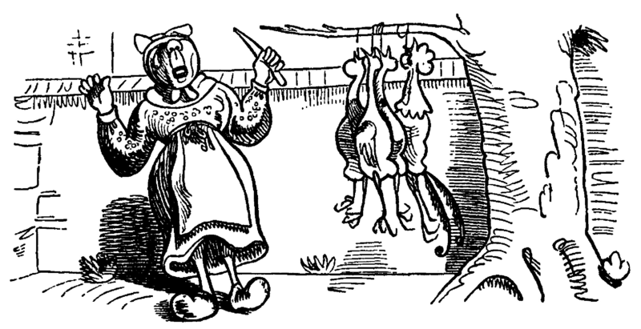
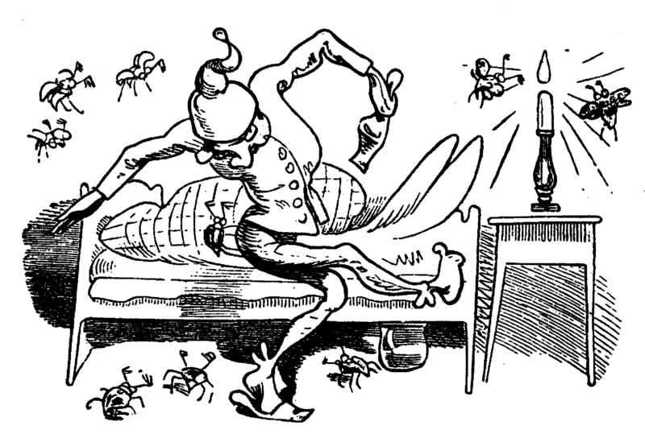
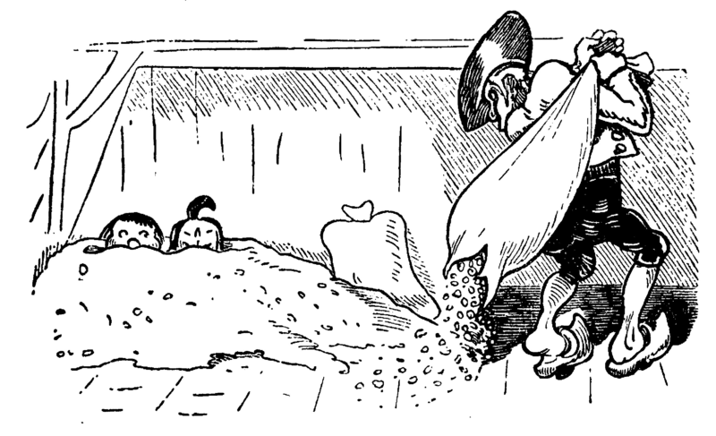

_024.png) »O du Spitz, du Ungetüm!
Aber wart! Ich komme ihm!«
»O du Spitz, du Ungetüm!
Aber wart! Ich komme ihm!«Max und Moritz machten beide, Als sie lebten, keine Freude: Bildlich siehst du jetzt die Possen, Die in Wirklichkeit verdrossen, Mit behaglichem Gekicher, Weil du selbst vor ihnen sicher. Aber das bedenke stets: Wie man's treibt, mein Kind, so geht's.
Ach, was muß man oft von bösen Kindern hören oder lesen! Wie zum Beispiel hier von diesen, Welche Max und Moritz hießen; Die, anstatt durch weise Lehren Sich zum Guten zu bekehren, Oftmals noch darüber lachten Und sich heimlich lustig machten. Ja, zur Übeltätigkeit, Ja, dazu ist man bereit! Menschen necken, Tiere quälen, Äpfel, Birnen, Zwetschgen stehlen, Das ist freilich angenehmer Und dazu auch viel bequemer, Als in Kirche oder Schule Festzusitzen auf dem Stuhle. Aber wehe, wehe, wehe! Wenn ich auf das Ende sehe!! Ach, das war ein schlimmes Ding, Wie es Max und Moritz ging! Drum ist hier, was sie getrieben, Abgemalt und aufgeschrieben.
Mancher gibt sich viele Müh' Mit dem lieben Federvieh; Einesteils der Eier wegen, Welche diese Vögel legen; Zweitens: Weil man dann und wann Einen Braten essen kann; Drittens aber nimmt man auch Ihre Federn zum Gebrauch In die Kissen und die Pfühle, Denn man liegt nicht gerne kühle.
Seht, da ist die Witwe Bolte, Die das auch nicht gerne wollte.
Ihrer Hühner waren drei Und ein stolzer Hahn dabei. Max und Moritz dachten nun: Was ist hier jetzt wohl zu tun? Ganz geschwinde, eins, zwei, drei, Schneiden sie sich Brot entzwei,
In vier Teile, jedes Stück Wie ein kleiner Finger dick. Diese binden sie an Fäden, Übers Kreuz, ein Stück an jeden, Und verlegen sie genau In den Hof der guten Frau. -
Kaum hat dies der Hahn gesehen, Fängt er auch schon an zu krähen: Kikeriki! Kikikerikih!! - Tak, tak, tak! - Da kommen sie.
Hahn und Hühner schlucken munter Jedes ein Stück Brot hinunter;
Aber als sie sich besinnen, Konnte keines recht von hinnen.
In die Kreuz und in die Quer Reißen sie sich hin und her,
Flattern auf und in die Höh', Ach herrje, herrjemine!
Ach, sie bleiben an dem langen, Dürren Ast des Baumes hangen, Und ihr Hals wird lang und länger, Ihr Gesang wird bang und bänger.
Jedes legt noch schnell ein Ei, Und dann kommt der Tod herbei.
Witwe Bolte in der Kammer Hört im Bette diesen Jammer;
Ahnungsvoll tritt sie heraus, Ach, was war das für ein Graus!
»Fließet aus dem Aug', ihr Tränen! All mein Hoffen, all mein Sehnen, Meines Lebens schönster Traum Hängt an diesem Apfelbaum!«
Tiefbetrübt und sorgenschwer Kriegt sie jetzt das Messer her, Nimmt die Toten von den Strängen, Daß sie so nicht länger hängen,
Und mit stummem Trauerblick Kehrt sie in ihr Haus zurück.
Dieses war der erste Streich, Doch der zweite folgt sogleich.
Als die gute Witwe Bolte Sich von ihrem Schmerz erholte, Dachte sie so hin und her, Daß es wohl das beste wär', Die Verstorbnen, die hienieden Schon so frühe abgeschieden, Ganz im stillen und in Ehren Gut gebraten zu verzehren. Freilich war die Trauer groß, Als sie nun so nackt und bloß Abgerupft am Herde lagen, Sie, die einst in schönen Tagen Bald im Hofe, bald im Garten Lebensfroh im Sande scharrten. -
Ach, Frau Bolte weint aufs neu, Und der Spitz steht auch dabei. -
Max und Moritz rochen dieses. »Schnell aufs Dach gekrochen!« hieß es.
Max und Moritz rochen dieses. »Schnell aufs Dach gekrochen!« hieß es.
Eben geht mit einem Teller Witwe Bolte in den Keller, Daß sie von dem Sauerkohle Eine Portion sich hole, Wofür sie besonders schwärmt, Wenn er wieder aufgewärmt.
Unterdessen auf dem Dache Ist man tätig bei der Sache. Max hat schon mit Vorbedacht Eine Angel mitgebracht. Schnupdiwup! Da wird nach oben Schon ein Huhn heraufgehoben. Schnupdiwup! Jetzt Numro zwei; Schnupdiwup! Jetzt Numro drei; Und jetzt kommt noch Numro vier: Schnupdiwup! Dich haben wir!! - Zwar der Spitz sah es genau Und er bellt: Rawau! Rawau!
Aber schon sind sie ganz munter Fort und von dem Dach herunter. -
Na! Das wird Spektakel geben, Denn Frau Bolte kommt soeben; Angewurzelt stand sie da, Als sie nach der Pfanne sah. Alle Hühner waren fort. - »Spitz!!« - Das war ihr erstes Wort.
»O du Spitz, du Ungetüm!
Aber wart! Ich komme ihm!«
Mit dem Löffel groß und schwer Geht es über Spitzen her; Laut ertönt sein Wehgeschrei, Denn er fühlt sich schuldenfrei
Max und Moritz im Verstecke Schnarchen aber an der Hecke, Und vom ganzen Hühnerschmaus Guckt nur noch ein Bein heraus.
Dieses war der zweite Streich, Doch der dritte folgt sogleich
Jedermann im Dorfe kannte Einen, der sich Böck benannte. -
Alltagsröcke, Sonntagsröcke, Lange Hosen, spitze Fräcke, Westen mit bequemen Taschen, Warme Mäntel und Gamaschen,- Alle diese Kleidungssachen Wußte Schneider Böck zu machen. - Oder wäre was zu flicken, Abzuschneiden, anzustücken, Oder gar ein Knopf der Hose Abgerissen oder lose - Wie und wo und wann es sei, Hinten, vorne, einerlei - Alles macht der Meister Böck, Denn das ist sein Lebenszweck. - Drum so hat in der Gemeinde Jedermann ihn gern zum Freunde. - Aber Max und Moritz dachten, Wie sie ihn verdrießlich machten. -
Nämlich vor des Meisters Hause Floß ein Wasser mit Gebrause. Übers Wasser führt ein Steg, Und darüber geht der Weg. -
Max und Moritz, gar nicht träge, Sägen heimlich mit der Säge, Ritzeratze! voller Tücke, In die Brücke eine Lücke. -
Als nun diese Tat vorbei, Hört man plötzlich ein Geschrei: »He, heraus! Du Ziegen-Böck! Schneider, Schneider, meck, meck, meck!« - Alles konnte Böck ertragen, Ohne nur ein Wort zu sagen; Aber wenn er dies erfuhr, Ging's ihm wider die Natur.
Schnelle springt er mit der Elle Über seines Hauses Schwelle, Denn schon wieder ihm zum Schreck Tönt ein lautes: »Meck, meck, meck!!«
Und schon ist er auf der Brücke, Kracks! Die Brücke bricht in Stücke;
Wieder tönt es: »Meck, meck, meck!« Plumps! Da ist der Schneider weg!
Grad als dieses vorgekommen, Kommt ein Gänsepaar geschwommen,
Welches Böck in Todeshast Krampfhaft bei den Beinen faßt.
Beide Gänse in der Hand Flattert er auf trocknes Land. -"
Übrigens bei alle dem Ist so etwas nicht bequem;
Wie denn Böck von der Geschichte Auch das Magendrücken kriegte.
Hoch ist hier Frau Böck zu preisen! Denn ein heißes Bügeleisen, Auf den kalten Leib gebracht, Hat es wiedergutgemacht. - Bald im Dorf hinauf, hinunter, Hieß es: Böck ist wieder munter!!
Dieses war der dritte Streich, Doch der vierte folgt sogleich.
Also lautet ein Beschluß, Daß der Mensch was lernen muß. - Nicht allein das Abc Bringt den Menschen in die Höh'; Nicht allein in Schreiben, Lesen Übt sich ein vernünftig Wesen; Nicht allein in Rechnungssachen Soll der Mensch sich Mühe machen, Sondern auch der Weisheit Lehren Muß man mit Vergnügen hören. -
Daß dies mit Verstand geschah, War Herr Lehrer Lämpel da. - Max und Moritz, diese beiden, Mochten ihn darum nicht leiden; Denn wer böse Streiche macht, Gibt nicht auf den Lehrer acht. - Nun war dieser brave Lehrer Von dem Tobak ein Verehrer, Was man ohne alle Frage Nach des Tages Müh und Plage Einem guten, alten Mann Auch von Herzen gönnen kann. - Max und Moritz, unverdrossen, Sinnen aber schon auf Possen, Ob vermittelst seiner Pfeifen Dieser Mann nicht anzugreifen. -
_041.png) Einstens, als es Sonntag wieder
Und Herr Lämpel, brav und bieder,
In der Kirche mit Gefühle
Saß vor seinem Orgelspiele,
Einstens, als es Sonntag wieder
Und Herr Lämpel, brav und bieder,
In der Kirche mit Gefühle
Saß vor seinem Orgelspiele,
Schlichen sich die bösen Buben In sein Haus und seine Stuben, Wo die Meerschaumpfeife stand; Max hält sie in seiner Hand; Aber Moritz aus der Tasche Zieht die Flintenpulverflasche, Und geschwinde, stopf, stopf, stopf! Pulver in den Pfeifenkopf. - Jetzt nur still und schnell nach Haus, Denn schon ist die Kirche aus. -
Eben schließt in sanfter Ruh Lämpel seine Kirche zu; Und mit Buch und Notenheften Nach besorgten Amtsgeschäften, Lenkt er freudig seine Schritte Zu der heimatlichen Hütte,
Und voll Dankbarkeit sodann Zündet er sein Pfeifchen an.
»Ach!« - spricht er - »Die größte Freud' Ist doch die Zufriedenheit!!«
Rums!! - Da geht die Pfeife los Mit Getöse, schrecklich groß. Kaffeetopf und Wasserglas, Tobaksdose, Tintenfaß, Ofen, Tisch und Sorgensitz - Alles fliegt im Pulverblitz. -
Als der Dampf sich nun erhob, Sieht man Lämpel, der gottlob Lebend auf dem Rücken liegt; Doch er hat was abgekriegt.
Nase, Hand, Gesicht und Ohren Sind so schwarz als wie die Mohren, Und des Haares letzter Schopf Ist verbrannt bis auf den Kopf. - Wer soll nun die Kinder lehren Und die Wissenschaft vermehren? Wer soll nun für Lämpel leiten Seine Amtestätigkeiten? Woraus soll der Lehrer rauchen, Wenn die Pfeife nicht zu brauchen??
Mit der Zeit wird alles heil, Nur die Pfeife hat ihr Teil.
Dieses war der vierte Streich, Doch der fünfte folgt sogleich.
Wer in Dorfe oder Stadt Einen Onkel wohnen hat, Der sei höflich und bescheiden, Denn das mag der Onkel leiden. Morgens sagt man: »Guten Morgen! Haben Sie was zu besorgen?« Bringt ihm, was er haben muß: Zeitung, Pfeife, Fidibus. Oder sollt' es wo im Rücken Drücken, beißen oder zwicken, Gleich ist man mit Freudigkeit Dienstbeflissen und bereit. Oder sei's nach einer Prise, Daß der Onkel heftig niese, Ruft man: »Prosit!« alsogleich. »Danke!« - »Wohl bekomm' es Euch!« Oder kommt er spät nach Haus, Zieht man ihm die Stiefel aus, Holt Pantoffel, Schlafrock, Mütze, Daß er nicht im Kalten sitze - Kurz, man ist darauf bedacht, Was dem Onkel Freude macht. Max und Moritz ihrerseits Fanden darin keinen Reiz. Denkt euch nur, welch schlechten Witz Machten sie mit Onkel Fritz!
Jeder weiß, was so ein Mai- Käfer für ein Vogel sei. In den Bäumen hin und her Fliegt und kriecht und krabbelt er.
Max und Moritz, immer munter, Schütteln sie vom Baum herunter.
_052.png) In die Tüte von Papiere
Sperren sie die Krabbeltiere.
In die Tüte von Papiere
Sperren sie die Krabbeltiere.
Fort damit und in die Ecke Unter Onkel Fritzens Decke!
Bald zu Bett geht Onkel Fritze In der spitzen Zipfelmütze; Seine Augen macht er zu, Hüllt sich ein und schläft in Ruh.
Doch die Käfer, kritze, kratze! Kommen schnell aus der Matratze.
Schon faßt einer, der voran, Onkel Fritzens Nase an.
Bau!« - schreit er - »Was ist das hier?!!
Und erfaßt das Ungetier.
Und den Onkel, voller Grausen, Sieht man aus dem Bette sausen.
»Autsch!!« - Schon wieder hat er einen Im Genicke, an den Beinen;
Hin und her und rundherum Kriecht es, fliegt es mit Gebrumm.
Onkel Fritz, in dieser Not, Haut und trampelt alles tot.
Guckste wohl! Jetzt ist's vorbei Mit der Käferkrabbelei!
Onkel Fritz hat wieder Ruh Und macht seine Augen zu.
Dieses war der fünfte Streich, Doch der sechste folgt sogleich.
In der schönen Osterzeit, Wenn die frommen Bäckersleut' Viele süße Zuckersachen Backen und zurechte machen, Wünschten Max und Moritz auch Sich so etwas zum Gebrauch. -
Doch der Bäcker, mit Bedacht, Hat das Backhaus zugemacht.
Also will hier einer stehlen, Muß er durch den Schlot sich quälen
Ratsch! Da kommen die zwei Knaben Durch den Schornstein, schwarz wie Raben
_068.png) Puffl Sie fallen in die Kist',
Wo das Mehl darinnen ist
Puffl Sie fallen in die Kist',
Wo das Mehl darinnen ist
Da! Nun sind sie alle beide Rund herum so weiß wie Kreide.
Aber schon mit viel Vergnügen Sehen sie die Brezeln liegen.
Knacks!! - Da bricht der Stuhl entzwei;
Schwapp!! - Da liegen sie im Brei.
Ganz von Kuchenteig umhüllt Stehn sie da als Jammerbild
Gleich erscheint der Meister Bäcker Und bemerkt die Zuckerlecker.
_Eins, zwei, drei! - Eh' man's gedacht, Sind zwei Brote draus gemacht
In dem Ofen glüht es noch - Ruff! - damit ins Ofenloch!
Ruff! Man zieht sie aus der Glut; Denn nun sind sie braun und gut. -
Jeder denkt, die sind perdü! Aber nein! - Noch leben sie!
Knusper, knasper! - wie zwei Mäuse Fressen sie durch das Gehäuse;
Und der Meister Bäcker schrie: »Ach herrje! Da laufen sie!« Dieses war der sechste Streich, Doch der letzte folgt sogleich.
Max und Moritz, wehe euch! Jetzt kommt euer letzter Streich! -
Wozu müssen auch die beiden Löcher in die Säcke schneiden?? -
- Seht, da trägt der Bauer Mecke Einen seiner Maltersäcke. -
Aber kaum daß er von hinnen, Fängt das Korn schon an zu rinnen.
Und verwundert steht und spricht er: »Zapperment! Dat Ding werd lichter!«
Hei! Da sieht er voller Freude Max und Moritz im Getreide.
Rabs!! - in seinen großen Sack Schaufelt er das Lumpenpack
Max und Moritz wird es schwüle, Denn nun geht es nach der Mühle.
»Meister Müller, he, heran! Mahl er das, so schnell er kann!«
»Her damit!« Und in den Trichter Schüttet er die Bösewichter.
Rickeracke! Richeracke! Geht die Mühle mit Geknacke.
Hier kann man sie noch erblicken, Fein geschroten und in Stücken
Doch sogleich verzehret sie Meister Müllers Federvieh
Als man dies im Dorf erfuhr, War von Trauer keine Spur. Witwe Bolte, mild und weich, Sprach: »Sieh da, ich dacht' es gleich!« »Jajaja!« rief Meister Böck. »Bosheit ist kein Lebenszweck!« Drauf so sprach Herr Lehrer Lämpel: »Dies ist wieder ein Exempel!« »Freilich«, meint' der Zuckerbäcker, »Warum ist der Mensch so lecker!« Selbst der gute Onkel Fritze Sprach: »Das kommt von dumme Witze!« Doch der brave Bauersmann Dachte: Wat geiht meck dat an! Kurz, im ganzen Ort herum Ging ein freudiges Gebrumm: »Gott sei Dank! Nun ist's vorbei Mit der Übeltäterei!«